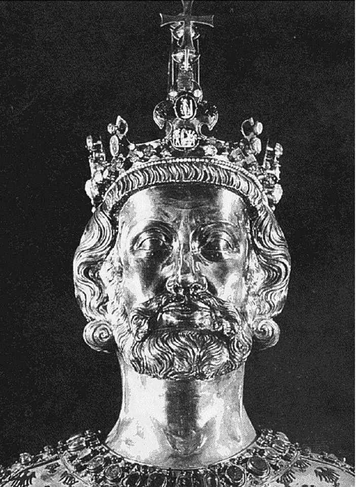
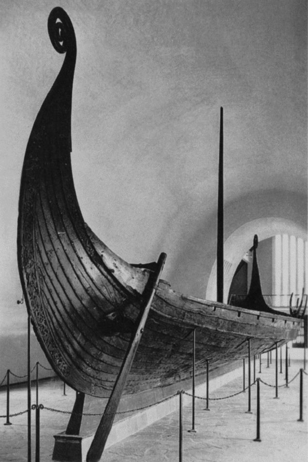
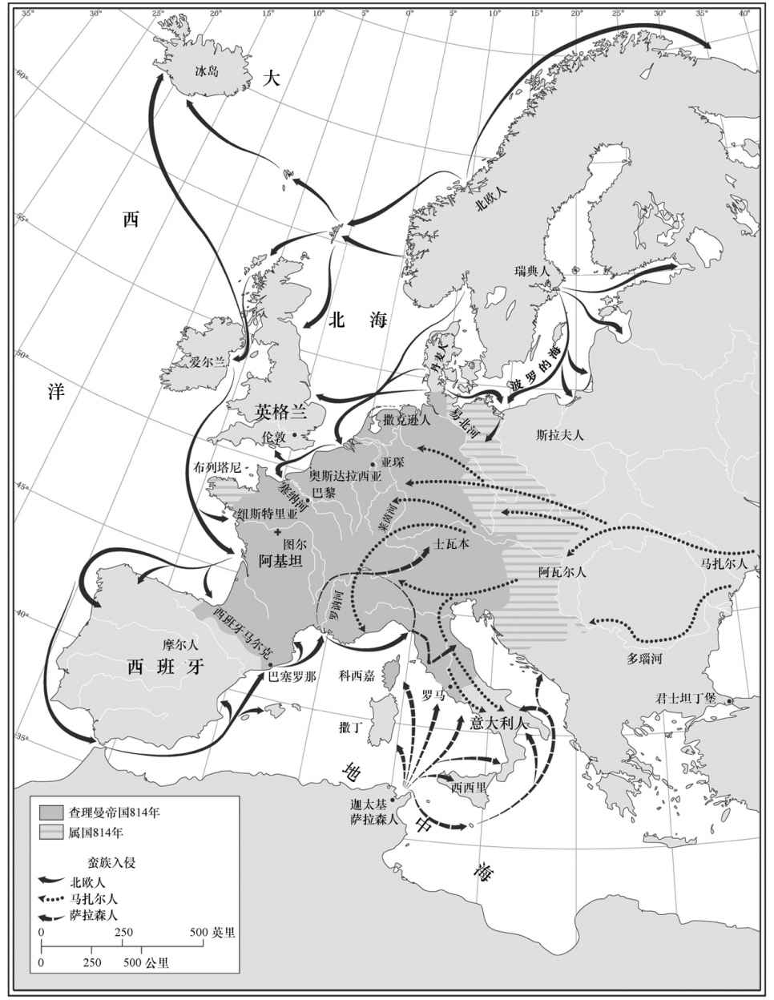

但是事与愿违，西方并没有步中国之后尘，相反，一股新的侵略浪潮粉碎了法兰克人和拜占庭人刚刚形成的脆弱的帝国结构，使西方再度陷入混乱和分裂之中。蒙古内部的动乱又一次迫使避难的游牧部落沿着入侵欧洲的路线向西行进。就像他们的匈奴祖先一样，这些在西方开始被称为阿瓦尔人的蛮族以匈牙利平原为基地，向四面八方发起袭击。他们把日耳曼族的伦巴第人赶到了意大利（568年）；伦巴第人又把拜占庭人从亚平宁半岛上的大部分地区驱逐出去，从而粉碎了查士丁尼恢复原罗马帝国的梦想。阿瓦尔人还迫使斯拉夫部落向南进入巴尔干半岛；斯拉夫人则占据了从亚得里亚海到黑海的广阔地带。
8世纪时，加洛林王朝取代墨洛温王朝，取得了一系列惊人的胜利，重新点燃起西方恢复帝国统一的希望之火。克洛维的继承者们命运悲惨，他们被称为“庸王”，即“一事无成的国王”。不过，占据了“拥有实权的下级”职位、意志坚强的宫相们却维持着王国的团结。其中以外号“铁锤”的查理·马特最为杰出，他从714到741年，一直在幕后执政。他的最大功绩是，在图尔战役（732年）中打败了侵占北非和西班牙，且已挺进法兰西南部的穆斯林军队。

图69 查理曼：法兰克国王（768—814年），西罗马帝国皇帝（800—814年）。
马特的儿子即矮子丕平不甘心充任“一事无成”的国王的宫相，于751年废黜墨洛温王朝末代国王，创建了所谓的加洛林王朝；加洛林王朝以丕平之子查理曼的名字命名。查理曼是这一家系中最著名的国王，在768年到814年的长期统治中，他不断征战，扩充疆域，征服了德意志西北部的撒克逊人，打败了匈牙利的阿瓦尔人，吞并了意大利的伦巴第人王国，迫使穆斯林退回到比利牛斯山脉以南地区。到8世纪末，其帝国已从北海扩展到比利牛斯山脉，从大西洋扩展到东欧的斯拉夫地区，查理曼成为西方无可争辩的征服者。800年圣诞节，教皇利奥三世为他举行加冕称帝仪式，以承认他的最高地位。据查理曼的秘书和传记作者叙述，加冕那天，集会的民众大声高呼：“生命和胜利，永远属于伟大上帝的受冕者，罗马人温和的皇帝查理·奥古斯都！”
这一情景说明，人们仍抱有恢复帝国统一的梦想，但这也只能是梦想。查理曼死后不久，来自南方、东方和北方的新侵略浪潮又淹没了整个欧洲。在南方，穆斯林海盗和冒险者征服了克里特岛和西西里岛，袭击了地中海沿岸所有地区，给海上贸易以严重破坏。在东方，来自中亚的另一支游牧部族马扎尔人，于895年到达匈牙利平原，他们仿效前匈奴人和阿瓦尔人，侵袭了周围各国。

图70 出土于1904年的北欧海盗船“奥斯伯格号”，是世界上保存最好的维京人的船只。现陈列在挪威奥斯陆的维京人船舶博物馆中。
北欧人即维京人的侵略范围最广。相对于陆上的游牧民来说，他们就是海上的游牧民。维京人制造了一种船来代替马匹，这种船吃水浅，速度快，灵活性强。挪威的维京人正是乘这种船向西航行，到达冰岛、格陵兰岛和北美洲的。他们和从丹麦来的同胞一起，袭击了不列颠群岛和欧洲西海岸，甚至强行渡过直布罗陀海峡，劫掠了地中海两岸。由于瑞典东面临海，这里的维京人渡过波罗的海，到达俄罗斯一些河流，并顺流而下，经入海口，进入里海和黑海。
这样，整个欧洲被这些大胆的侵略者团团围住。起初，8世纪末和9世纪，他们只是一味掠夺，并摧毁了无数寺院和城镇。北欧人乘坐那种吃水浅的船，能溯河而上，进入遥远的内地，因此，很少有地区幸免于难。当时的教堂里，常可听到这样的祈祷：“啊，上帝，把我们从这些北方人的惩罚下拯救出来吧！”到10、11世纪时，维京人开始在海外地区定居下来，占领并统治了法兰西北部大半地区和不列颠群岛。但是，无论他们定居何处，最终都被原有的基督教国家所吸收并同化。例如，法兰克国王为进一步防止维京人的劫掠，于911年承认他们的首领，并授予他所谓的诺曼底公爵的称号，诺曼底一词源于定居那里的北欧人。第一任诺曼底公爵罗伦的后代之一，就是征服者威廉，他于1066年成功地侵占了英格兰。
与此同时，加洛林王朝在穆斯林、马扎尔人和维京人的三面夹击下土崩瓦解，西欧再次成为屠宰场。10世纪为最黑暗的时期。自罗马帝国灭亡以来，欧洲似乎从未有过如此悲惨的现状，面临如此凄凉的前景（见地图10）。

地图10 蛮族对西方的不断入侵（9—10世纪）